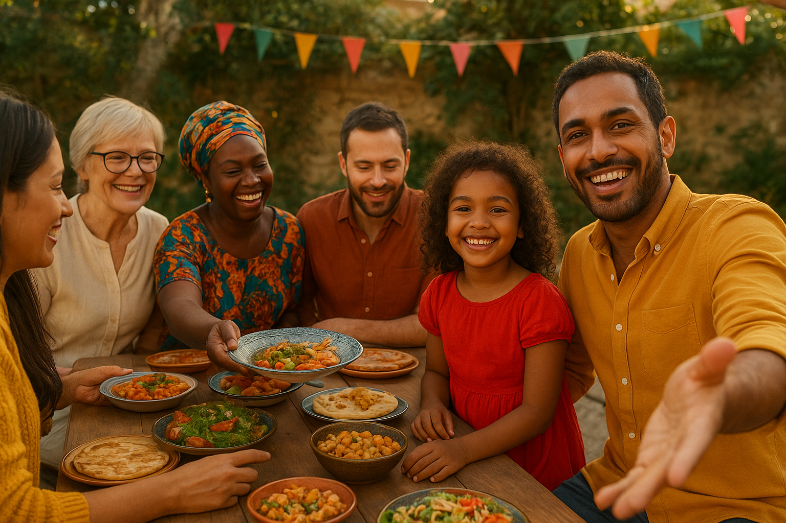
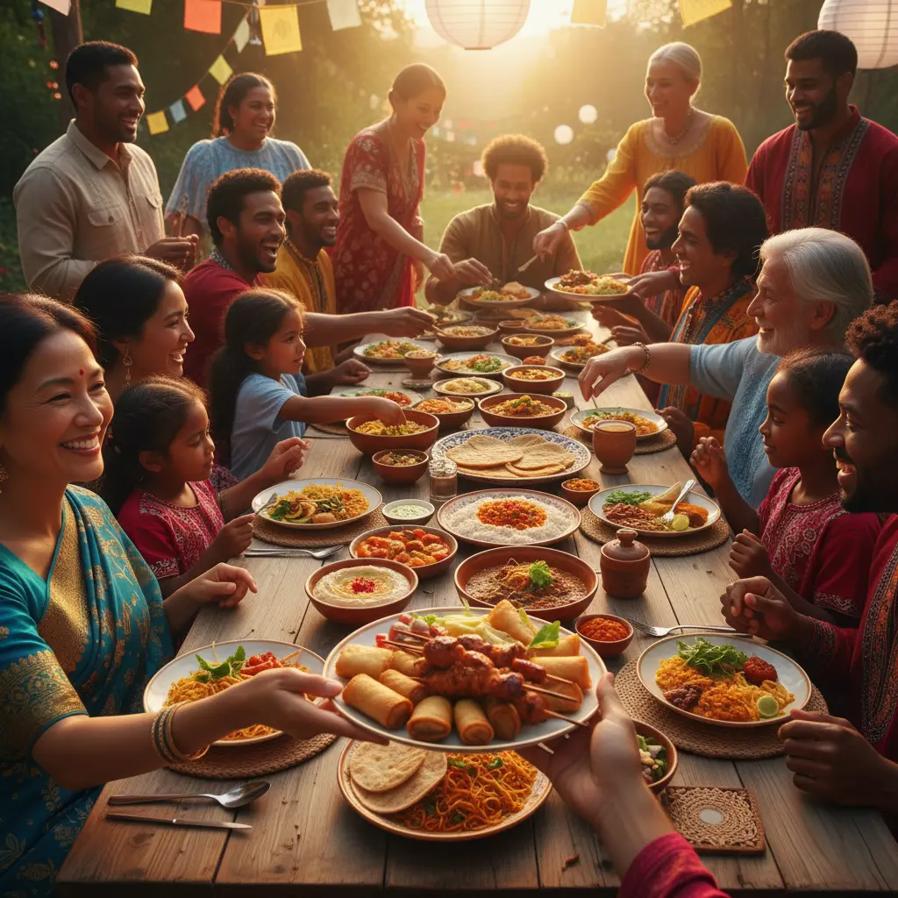
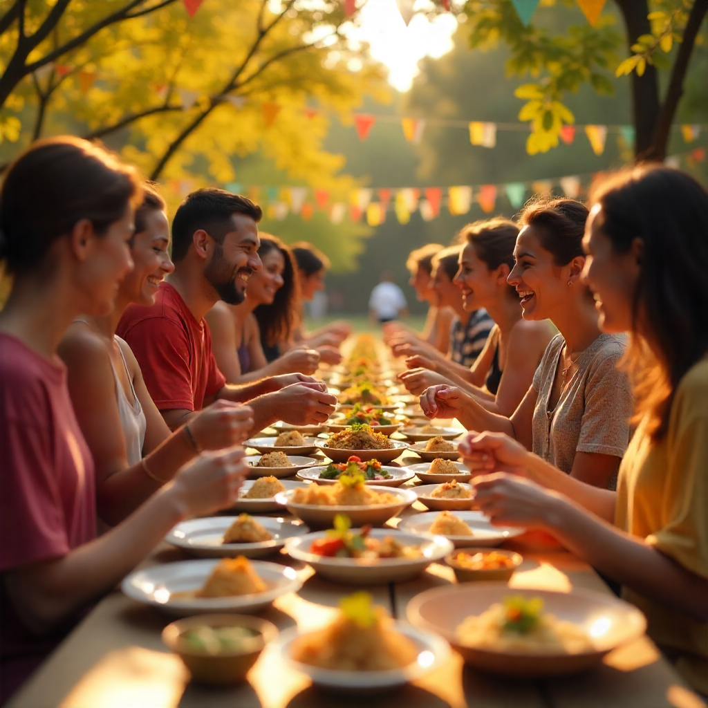
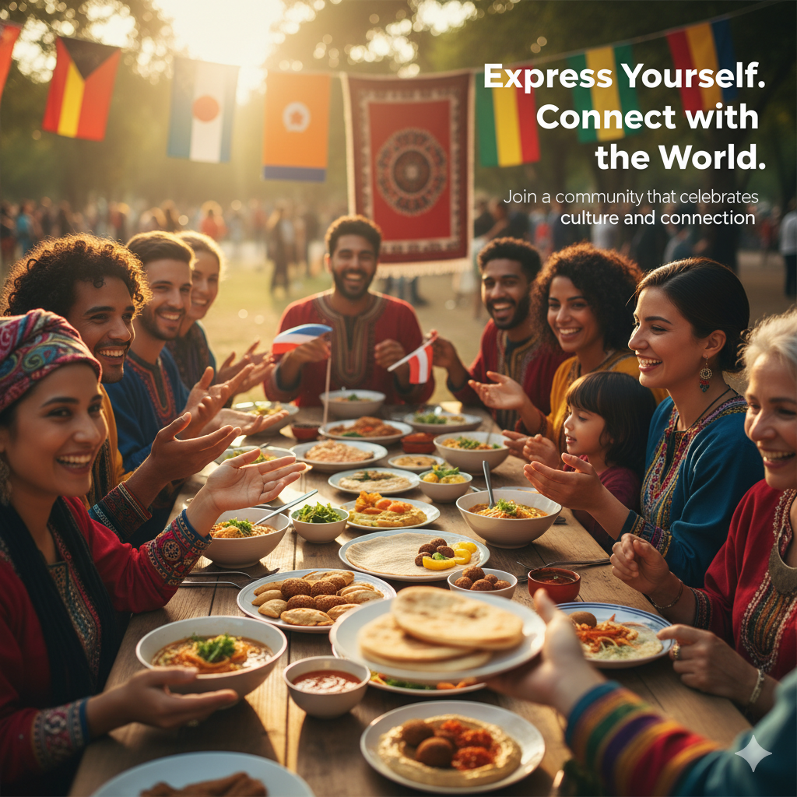
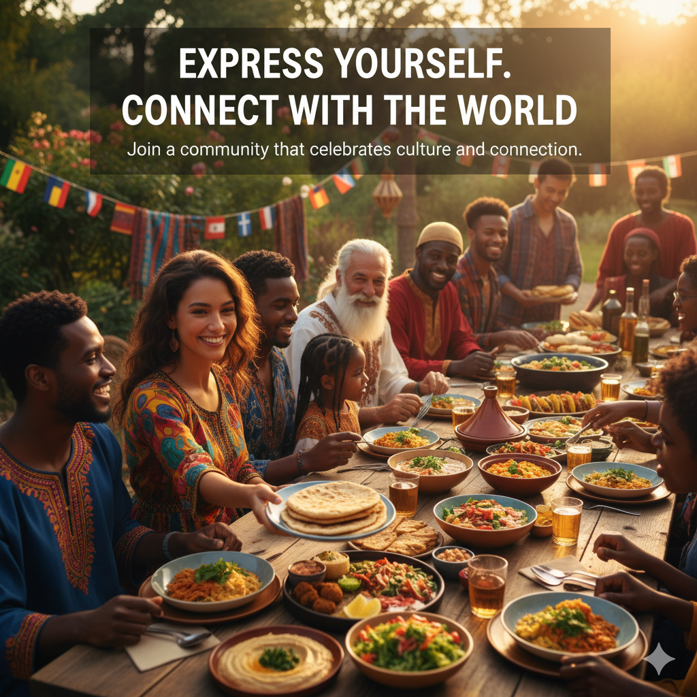

Reflective Design
This is the Reflective design aspect of the FeedCrumbs website
This page will consist of Values Mapping, Identity, Emotional Tone, Imagery Examples, Language & Expression, Language Reflection Checklist, and Seeing Ourselves in the Interface.
Values Mapping
| Value | Design Implication | Specific Element |
|---|---|---|
| Identity Representation | The website shows people and community pridefully showing their true self. Annotation: Representation of both individualy and community is first step to build connections. Showing example contents that show people and communities proudly expressing themself, such as images of people showing their culture, tradition, and activities, will encourage users to also express themself and their authentic culture. By pridefully representing themself to others, the users basically open up themself to the communities, and naturally interactions, engagements, and connections will be built. But to accomplish this, people will have to feel safe and respected, therefore the second value below. | Images of people who expressively shows their culture in the home page especially in the highlight section. Showcase of activities in the Highlight section, showing expressive activities from different events by the people/community. Also, in the communities page, similiar with the homepage, a call to actions for users to create/join communities and share their stories, ideas, experiences, like "Share your story together with us", "Establish connection through your voice", "Express yourself freely". |
| Cultural Inclusivity | Culturally different people and communities interact with each other, showing genuine compassion and tolerance. Annotation: In order to allow people freely express themself, and thereby build meaningful connections, people should first feel safe and respected, no matter their background, culture, origin, age etc. By maintaining a culturally inclusive design decisions in contents such as images, languages, tones, colours etc, people will feel more comfortable to express themself and build meaningful connections. | In addition to people and communities who express themself, some images will also shows people from different culture, origin, ages etc, interacting with each other. There will be no stereotypical or "dominant" culture shown in the images, but rather a mix of different cultures interacting with each other. This will also be made in the Highlight section and "About Us" section, where there will be images of the team members and also community representatives from different background, culture, age etc. |
| Meaningful Connections | Add a feeling that the website "invite" users to connect with the diverse community within the website. Annotation: One of the main purpose of this website is to build connections, therefore the design should also feel like "inviting" users to connect with the community. This can be done by using inviting words, and images in home page and communities page. | Welcome Message and buttons in the home page, especially in the header section to have an "inviting" message like "Join Us", "Share your story", "Connect with others from around the world" etc. In order to add a more personal touch, the welcome message language will change periodically (in several seconds) to reflect different cultures/languages around the world, such as "Join Us" - "Únete a nosotros" - "Rejoignez-nous" - "加入我们" - "Присоединяйтесь кнам", but appropriate translation will be provided in english below the text, like "Translate to: Join us 🇪🇸". |
Based on everything we have created so far, I will create the website identity, emotional tone, imagery examples, and language & expression, in order to make users can see themself in the website.
I want to revolve the website identity around "An inclusive platform that foster meaningful connections through self expression". There are three keywords, the first is "Inclusive", which means the website should be designed to be inclusive, so that people from different background, will feel safe and respected in order to do the second keyword, "Self Expression", which is the way for people to show their true self, and in this case, expresing themself through their cultural cuisine, and by doing so, they can do the third keyword, which is to create "meaningful connections" with other people/community in the platform.
In order to show the identity of the website, we will create emotial tone of
Proud, Welcoming, and Compassionate. Proud, is to encourage people to proudly
express their true self, Welcoming, is to invite people to join communities and
connect with people, and Compassionate, is to show genuine care and tolerance to
people from different background.
Here are some examples of imagery that can be used to reflect these emotional tones:


>

>
As shown in the images above, the imagery aligned with the intended emotional tone
and identity we want to create. Several important aspects of the images is first,
there are diversity among the people shown in the images, in terms of culture, age,
and the cuisines variety. Also, warm colors in the image create a welcoming
atmosphere while also supported the proud face expression of the people
in the images, which is joyful and proud of their culture. Their eyes and body
language is also either directed to the camera, showing "inviting" vibes, or
directed to each other, showing genuine interactions and connections. Personally, my
favorite is the first image as it checklist all my intended emotional tone and
identity.
One example of homepage text that I will be using is "Express Yourself, and Connect
With the World" Through this message, I intend to straightforwardly invite users to
xpress themself in the website, then connect with other people.
In addition, to add a more "welcoming" vibe, I will add a short message of something
like "Join a community that celebrates culture and connection".
Below are some examples of how the text will look like in the homepage.


In order to make sure that the language that we are going to use will not disrespect or offend any culture, I will make a checklist that refers to the Australian Government style manual for inclusive language, and also my own values and user needs. Here is the checklist:
- Use specific nation/community names when possible (for example "Yawuru people" not just "Aboriginal people") This also reflect on User Need 1 and 2 in Value 1, Identity Representation, where users want to see autenthic representation of their own culture and community.
- In Lores (Wiki) content, consult with community representatives before publishing
- For CrumbsMap overlay layers, work with community representatives to ensure accurate representation of Indigenous lands and other historical sites.
- Refer to Australian as "Australians", not "migrants" or "foreigners"
- Use "they/them" as default gender neutral pronouns
- In Event descriptions (OZvents), use "Participants" or "attendees" not gendered terms
- Only mention age when relevant
- Avoid terms like "myth," "legend," "folklore" when referring to spiritual beliefs especially I wil have Lores (Wiki) content.
Original Example Text:
"Express Yourself, and Connect With the World" "Join a community that celebrates culture and connection"
Revised Example Text:
"Express Yourself, and Connect With the World" "Join communities that celebrate culture and connection"
Annotation: In the revised text, I changed "a community" to "communities" to reflect the inclusivity of different cultures and communities, and also to avoid the implication that there is only one community that users can join.
Dwiputra Sam
Hi My Name is Sam